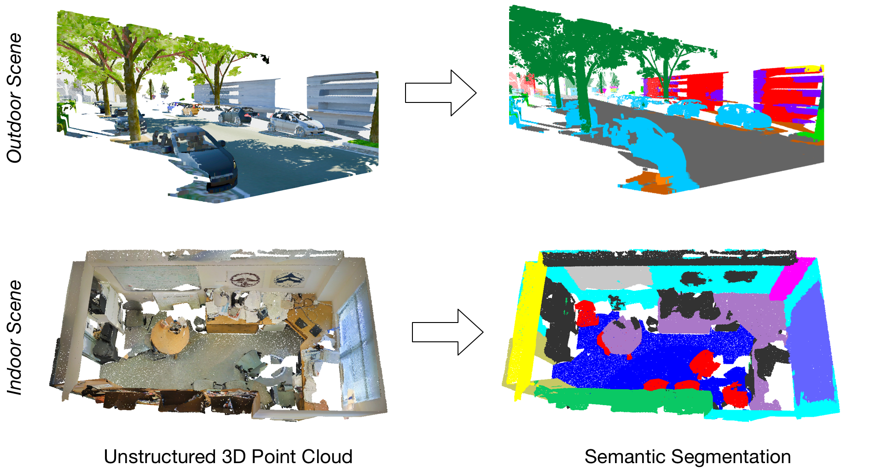

Publications
-

3D-BEVIS: Bird's-Eye-View Instance Segmentation Proc. German Conference on Pattern and Recognition (GCPR), 2019.
YRF DAGM Best Master's Thesis Award 2019 Paper -

Know What Your Neighbors Do: 3D Semantic Segmentation of Point Clouds Proc. European Conference on Computer Vision Workshops (ECCVW), 2018.
Paper -

Incremental Object Discovery in Time-Varying Image Collections Proc. Computer Vision and Pattern Recognition (CVPR), 2016.
Paper